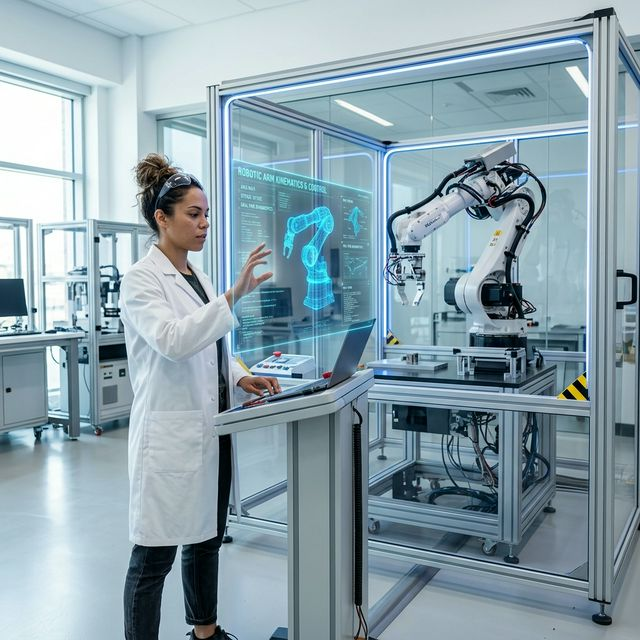

스마트 팩토리 구축 및
지능형 로봇 제어 솔루션 가이드
Executive Summary
본 백서는 4차 산업혁명의 핵심인 지능형 자동화 공정 구축을 위한 로봇소프트 코퍼레이션의 독자적인 기술 프레임워크를 다룹니다. 기존 하드웨어 중심의 자동화에서 소프트웨어 정의 로보틱스(Software-Defined Robotics)로의 전환을 통해 생산 효율성을 300% 이상 증대시킨 실제 사례와 아키텍처를 상세히 공개합니다.

Key Architecture: RSC Brain
로봇소프트 코퍼레이션의 핵심 엔진인 'RSC Brain'은 딥러닝 기반의 인지 알고리즘과 초저지연 연동 기술이 집약된 플랫폼입니다. 수만 개의 센서 데이터를 1ms 이내에 처리하여 로봇의 움직임을 최적화합니다.
Autonomous Path Planning
정적인 경로 설정을 넘어, 현장의 장애물과 실시간 환경 변화에 즉각 대응하는 동적 경로 생성 알고리즘을 지원합니다.
Multi-Robot Coordination
수백 대의 로봇이 서로 충돌 없이 협업할 수 있도록 하는 군집 제어(Swarm Control) 기술을 탑재하였습니다.
Predictive Maintenance
AI가 부품의 마모도를 예측하여 고장 전 정비를 제안함으로써 다운타임을 제로에 가깝게 유지합니다.
Edge Computing Mesh
중앙 서버 의존도를 낮춘 분산 처리 방식을 통해 전력 차단 시에도 자율적인 안전 정지가 가능합니다.
Security & Safety Protocol
인간과 로봇이 공존하는 현장에서 안전은 최우선 과제입니다. 로봇소프트는 하드웨어와 소프트웨어를 연동한 3중 안전 시스템(Triple-Safe)을 통해 예기치 못한 모든 상황에서 완벽한 차단을 보장합니다.

ISO 26262 및 IEC 61508 등 국제 안전 표준을 준수하며, 모든 데이터는 강력한 엔드투엔드 암호화 기술로 보호되어 외부 침입으로부터 자산을 안전하게 지킵니다.
Conclusion
로봇소프트 코퍼레이션은 단순한 로봇 제조사를 넘어, 기술로 고객의 미래를 그리는 파트너입니다. 본 솔루션을 통해 더 많은 기업이 디지털 전환의 혜택을 누리고 글로벌 시장에서의 경쟁력을 강화할 수 있기를 기대합니다.